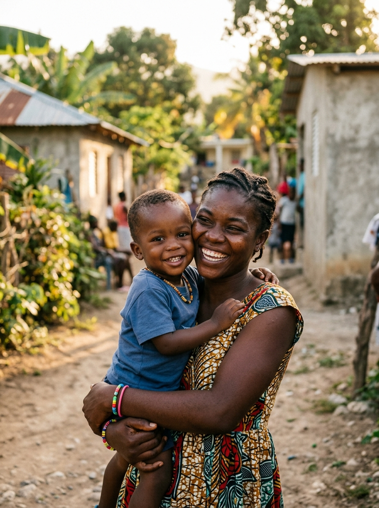
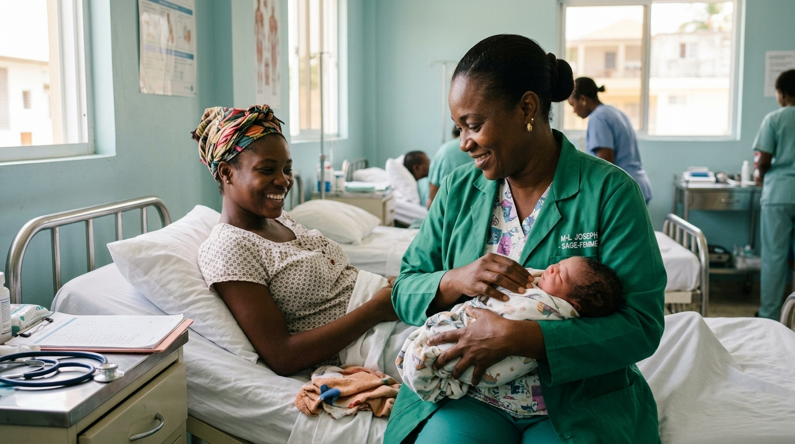
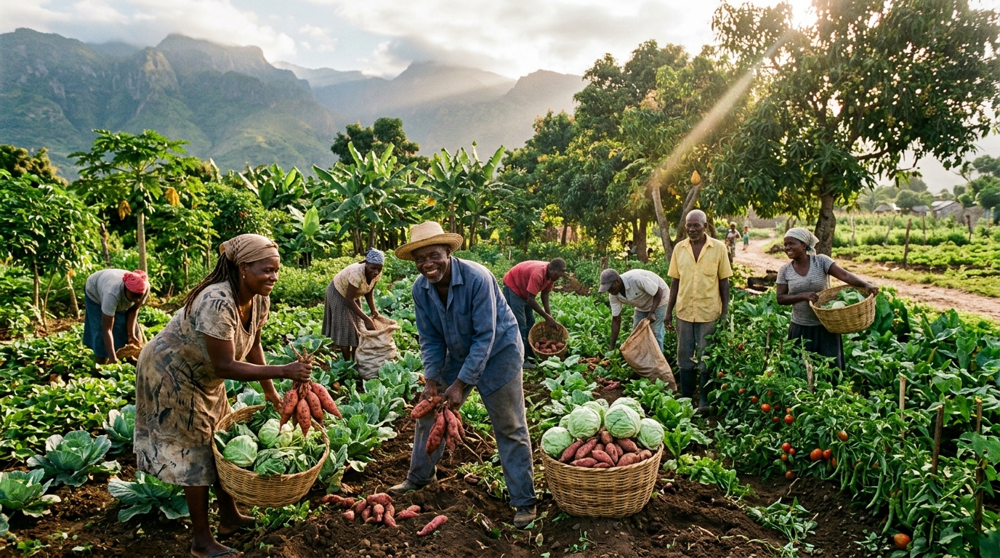

01
Éducation

Apprendre et grandir
L’éducation ouvre des chemins vers l’autonomie.

Avancer ensemble
Les apprentissages se construisent aussi dans le partage.

Construire son avenir
Le parrainage permet de soutenir un parcours d’études.
01 / 03


Nous agissons avec les communautés pour améliorer les conditions de vie par l’éducation, le développement économique et la promotion de la santé. Ensemble, construisons les chemins de l’autonomie.
Sonje Ayiti signifie
« Souvenez-vous d’Haïti ».
Sonje Ayiti a été fondée pour reconstruire Haïti de manière durable, d’une façon qui apporte espoir, fierté et dignité aux Haïtiens touchés par l’organisation.
Nos humanitaires haïtiens et internationaux collaborent pour améliorer les conditions de vie de la communauté haïtienne. Notre vision à long terme est de donner aux Haïtiens les moyens de s’aider eux-mêmes.
En savoir plus sur Sonje AyitiSONJE AYITI EN IMAGES
Quatre domaines, autant de regards sur notre mission.
Découvrir tout l’album ↗L’éducation ouvre des chemins vers l’autonomie.
Les apprentissages se construisent aussi dans le partage.
Le parrainage permet de soutenir un parcours d’études.

La santé est au cœur du bien-être des communautés.

Aller à la rencontre des besoins des familles.

La prévention et l’accompagnement participent à la promotion de la santé.

Le développement économique accompagne l’autonomie des communautés.

Coopérer et partager les compétences pour ouvrir de nouvelles perspectives.

La terre et les savoir-faire agricoles font partie des ressources des communautés.

L’entraide nourrit une ambition collective et durable.
Photographies d’illustration, non issues de nos projets.
NOS 4 DOMAINES D’INTERVENTION
Des programmes conçus avec les communautés pour faire grandir leur autonomie dans le Nord et le Nord-Est d’Haïti.
Notre approche communautaire ↗La santé est au cœur du bien-être des communautés.
Aller à la rencontre des besoins des familles.
La prévention et l’accompagnement participent à la promotion de la santé.
Le développement économique accompagne l’autonomie des communautés.
Coopérer et partager les compétences pour ouvrir de nouvelles perspectives.
L’éducation ouvre des chemins vers l’autonomie.
Les apprentissages se construisent aussi dans le partage.
Le parrainage permet de soutenir un parcours d’études.
La terre et les savoir-faire agricoles font partie des ressources des communautés.
L’entraide nourrit une ambition collective et durable.
Photographies d’illustration.
Sonje Ayiti a des programmes actifs à Limonade, Bahon, Acul du Nord, Bas-Limbé, Phaeton et Paulette, dans les départements du Nord et du Nord-Est d’Haïti.
Communes et sections rurales
du Grand Nord
Santé, économie, éducation
et agriculture
Zones prioritaires d’intervention
Une même vision :
donner aux Haïtiens les moyens de s’aider eux-mêmes.
Des indicateurs concrets suivis et documentés au plus près des réalités de terrain.
enfants accompagnés vers l’école
Scolarisation, manuels & cantinesjeunes formés à un métier
Compétences techniques & insertionentrepreneurs et micro-activités soutenus
Micro-crédit & épargne solidaireprojets communautaires réalisés
Infrastructures locales & santépartenaires et écoles mobilisés
Alliance terrain Nord & Nord-EstLes programmes sont conçus dans un effort concerté visant à écouter, évaluer, éduquer, rééduquer, créer et mettre en œuvre.
Partir des besoins et de la participation des membres de la communauté.
ÉcoutePlacer les apprentissages au cœur d’une démarche collective.
ApprentissageConcevoir et mettre en œuvre les programmes avec les communautés pour favoriser leur autonomie.
ParticipationUne démarche collective. L’autonomie comme horizon.
Un engagement direct pour l’éducation.
Faire grandir les compétences et l’autonomie d’Haïti.
Vous souhaitez contribuer à l’éducation ? Découvrez les étudiants à parrainer sur le site officiel et contactez l’équipe pour connaître les modalités du parrainage.

Chaque don est un acte de confiance et de solidarité.
Faire grandir l’autonomie des communautés en Haïti.
Votre soutien accompagne notre engagement pour l’éducation, le développement économique et la promotion de la santé dans les communautés du Nord d’Haïti.
Les reportages de terrain, les avancées concrètes de nos programmes et nos prises de parole au service des communautés.